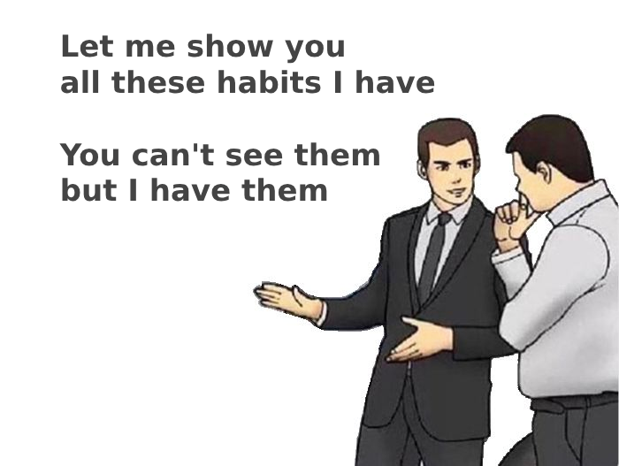
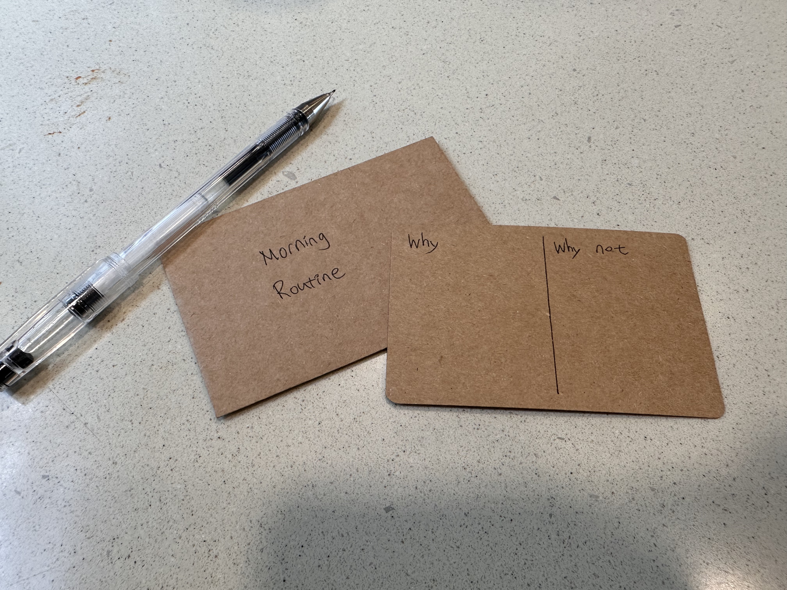
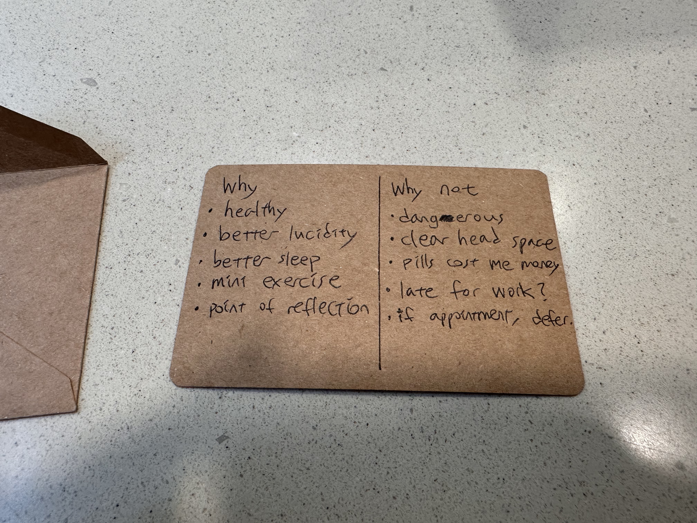
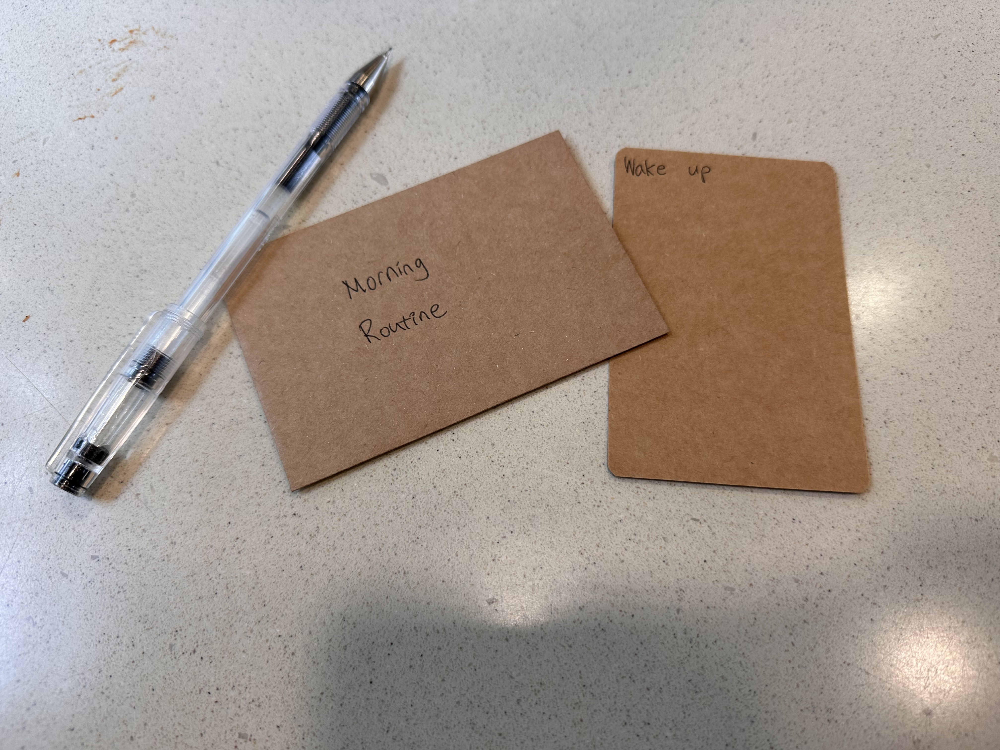
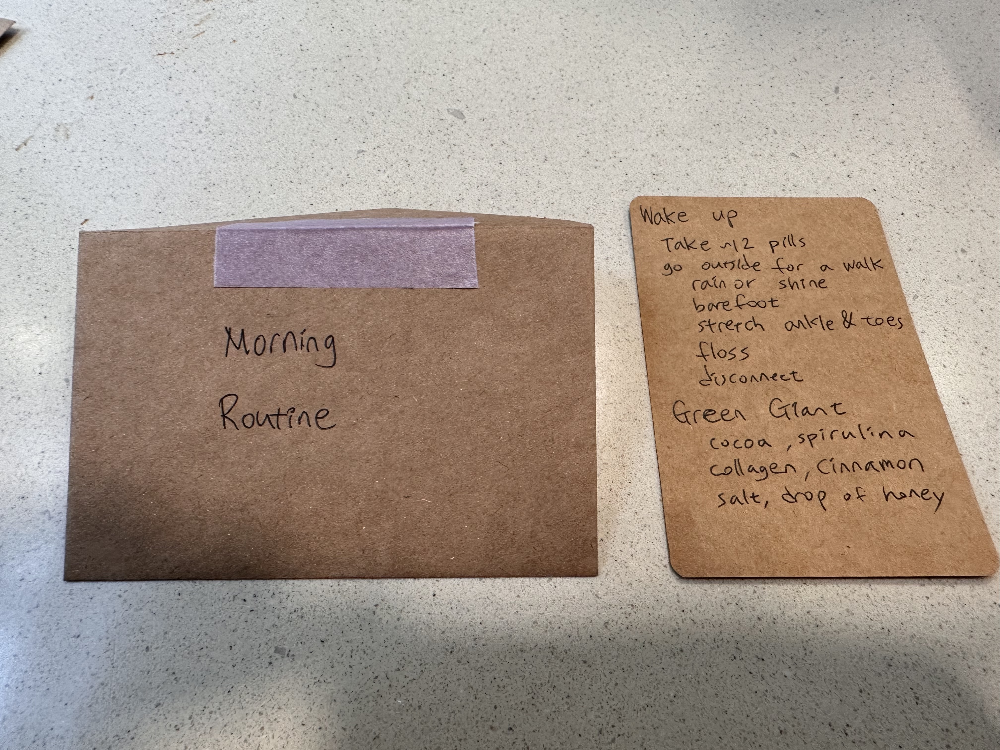
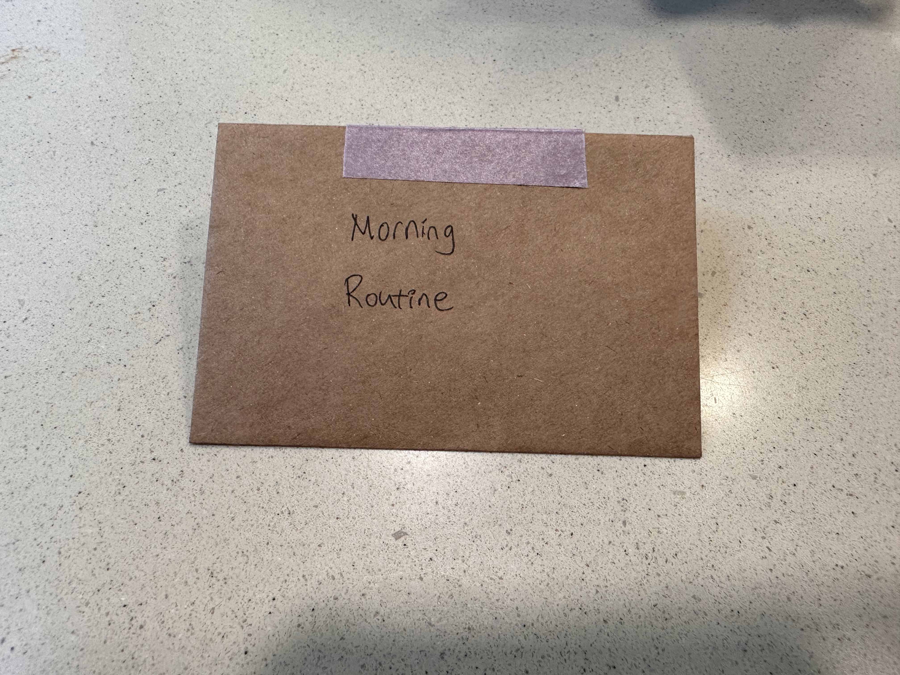

Habit Cards
 |
|---|
| If you can’t point to something you have, do you have it at all? |
After reading Atomic Habits, I felt a bit empty. I had all the motivation to build habits and a bag of tricks to reinforce them, but I had no plan of action.
As I’ve been talking to people about habits recently, one of the biggest obstacles to making a new habit is the fear of regressing from them. This makes sense, as committing to habits haphazardly will inevitably lead to disappointment. It’s an inability to coordinate oneself across time. It’s debilitating.
So how do you minimize the chance for regression? This can be reframed as its dual problem: the dual problem to habit regression minimization is habit stickiness maximization.
To minimize disappointment from quitting good habits, use as many techniques you know about human behavior to influence your future self.
Cognitive Bias
The instinctive response to cognitive bias is to avoid them. It’s easy to see them as obstacles to rational thought. However, we also know that we can’t get rid of them. Why not use them to our advantage?
Loss Aversion & Sunk Cost
If you have ‘invested’ into your habits already by writing them down, then it’s easier to fear the loss of something you have. By having something tangible that has effort imbued onto it, we can appeal to both loss aversion bias and sunk cost fallacy.
Social Proof
If you see that I am using habit cards to great effect, then it may work well for you!
Confirmation & Recency
You wrote it down, so it must be true. You’re reading it, so it must be true. Also, reading it when you’re just about to forget makes it easeir to recall.
Consideration
If you considered both why & why nots of your habit, then it must be true that the decision to perform the act must be fairly deduced.
The Card
Writing down your habits has the same reasons as writing down your goals. You aspire to become a kind of person that does these habits. But what exactly do you write?
Start with Why

You intend to start a habit with a compelling reason. If you only pay attention to the action instead of its reason, then it may start to feel like a vanity act. Only doing something because a past version of you thought it was a good idea at the time is a weak reason. Instad, write the reasons why it’s a good idea to perform the activities on the obvserse.
Why not?

Similarly, there are good reasons not to do the activities. If you’ve ever felt guilty for skipping a workout while sick, you know exactly what I mean. Exercise is for health – and if it compromises your health or others at the gym, you should skip the workout and opt for light exercise.
Thinking about contingencies ahead of time leaves no room for guilt. If you really don’t feel like it, maybe you can downgrade from a jog to a walk. Some degree of Emergency Procedure should be present. Because the card is only for yourself, only a word pointer to the procedure is required.
An adaptable habit stack

Your commitment should be to the reasons for your activities, not the activities themselves. So the implementation is more of a suggestion than a command from self past. It’s a precomputed list of acts that fit into your life harmoniously.

I don’t actually read the list of things to do each morning; that’s too much work. Instead, I glance at them once in a while to refresh my memory. One of the most common reasons that I stopped good habits in the past is because I relied entirely on ‘muscle memory’. But we have the technology to preserve such information through time.
The Timeless Way of Building habits is to try one thing at a time. New habits also don’t exist in a vacuum, so they should be contextual. A new habit should be appended to an existing habit stack.
Context

Putting reminders of your habits where you perform them will better contextualize them. That’s what the purple tape is for. This habit lives on my bathroom mirror, visible to me each time I perform the habit. I intend to cherish it as I would a piece of furniture. The longer it stays with me, the more provenance and wabi-sabi it will gain.